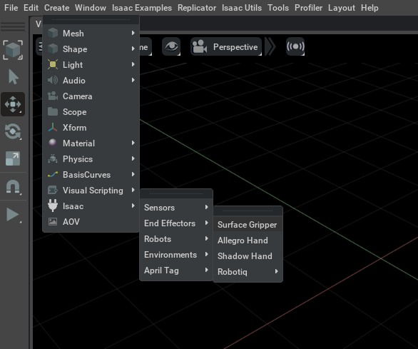

[isaacsim.robot.surface_gripper] Isaac Sim Surface Gripper#
Version: 3.6.1
Overview#
The isaacsim.robot.surface_gripper extension provides functionality for creating and controlling surface-based grippers in Isaac Sim, including suction grippers and distance-based grippers. Surface grippers can attach to and manipulate objects through contact detection rather than traditional mechanical clamping, making them suitable for handling a wide variety of objects with different shapes and materials.

Key Components#
create_surface_gripper#
The create_surface_gripper function creates a Surface Gripper prim under a given parent path. It automatically picks a unique prim name (e.g. SurfaceGripper, SurfaceGripper_01).
import omni.usd
from isaacsim.robot.surface_gripper import create_surface_gripper
stage = omni.usd.get_context().get_stage()
gripper_prim = create_surface_gripper(stage, "/World/ee_link")
Deprecated since version 3.6.0: The CreateSurfaceGripper Kit command is deprecated. Use create_surface_gripper(stage, prim_path) directly instead.
GripperView#
The GripperView class provides batch operations for managing multiple surface grippers simultaneously. It inherits from XformPrim and supports regex-based path matching to control collections of grippers efficiently.
gripper_view = GripperView(
paths="/World/Env[1-5]/Gripper",
max_grip_distance=np.array([0.1, 0.1, 0.1, 0.1, 0.1]),
coaxial_force_limit=np.array([50.0, 50.0, 50.0, 50.0, 50.0])
)
The view supports configurable parameters including maximum grip distance, coaxial and shear force limits, and retry intervals for gripping attempts.
SurfaceGripperInterface#
The SurfaceGripperInterface provides low-level control operations for individual grippers and batch operations. It manages gripper states through three primary states: Open, Closing, and Closed.
Action values control gripper behavior where values less than -0.3 open the gripper, values greater than 0.3 close the gripper, and intermediate values maintain the current state.
Functionality#
Grip Control#
Surface grippers operate through contact detection and force-based attachment. When commanded to close, the gripper attempts to grip objects in contact with its surface. The gripping mechanism considers both coaxial forces (perpendicular to the surface) and shear forces (parallel to the surface) to determine grip stability.
Batch Operations#
The extension provides efficient batch operations for controlling multiple grippers simultaneously. Both GripperView and SurfaceGripperInterface support batch methods that process multiple gripper paths in parallel, improving performance in multi-robot scenarios.
State Management#
Grippers maintain state information including current status (Open, Closing, Closed), gripped object paths, and configurable properties. The interface can optionally write state changes to USD for persistence or maintain them in memory for improved performance.
Force Limits#
Each gripper can be configured with coaxial and shear force limits that determine when gripped objects will be released. This prevents damage to both the gripper and handled objects while providing realistic gripping behavior.
Enable Extension#
The extension can be enabled (if not already) in one of the following ways:
Define the next entry as an application argument from a terminal.
APP_SCRIPT.(sh|bat) --enable isaacsim.robot.surface_gripper
Define the next entry under [dependencies] in an experience (.kit) file or an extension configuration (extension.toml) file.
[dependencies]
"isaacsim.robot.surface_gripper" = {}
Open the Window > Extensions menu in a running application instance and search for isaacsim.robot.surface_gripper.
Then, toggle the enable control button if it is not already active.
Commands#
Public command API for module isaacsim.robot.surface_gripper:
CreateSurfaceGripper (deprecated)#
.. deprecated::
Use create_surface_gripper(stage, prim_path) directly instead.
The CreateSurfaceGripper command is deprecated and will be removed in a future version. Use create_surface_gripper as a direct replacement.
Arguments#
prim_path
Python API#
Create a Surface Gripper prim at the given path. |
|
Provides high level functions to deal with batched data from surface gripper. |
|
- create_surface_gripper(
- stage: pxr.Usd.Stage,
- prim_path: str,
Create a Surface Gripper prim at the given path.
Generates a unique child path by appending
/SurfaceGripperto prim_path (incrementing toSurfaceGripper_01, etc. if needed) and then creates the gripper prim via the robot schema API.- Parameters:
stage – The USD stage.
prim_path – Parent path under which the gripper prim will be created.
- Returns:
The created Surface Gripper prim.
- class SurfaceGripperInterface#
Bases:
pybind11_object- close_gripper(
- self: isaacsim.robot.surface_gripper.bindings._surface_gripper.SurfaceGripperInterface,
- prim_path: str,
Closes/activates a surface gripper.
Commands the specified gripper to attempt to grip objects in contact with its surface.
- Parameters:
prim_path (str) – USD path to the gripper.
- Returns:
True if successful, False otherwise.
- Return type:
bool
- close_gripper_batch(
- self: isaacsim.robot.surface_gripper.bindings._surface_gripper.SurfaceGripperInterface,
- prim_paths: List[str],
Closes multiple surface grippers in parallel.
Batch operation that closes multiple grippers efficiently.
- Parameters:
prim_paths (list[str]) – List of USD paths for grippers to close.
- Returns:
List of success flags corresponding to each gripper path.
- Return type:
list[bool]
- get_gripped_objects(
- self: isaacsim.robot.surface_gripper.bindings._surface_gripper.SurfaceGripperInterface,
- prim_path: str,
Gets a list of objects currently gripped.
Returns the USD paths of all objects that are currently held by the specified gripper.
- Parameters:
prim_path (str) – USD path to the gripper.
- Returns:
List of USD paths for all gripped objects, empty if none.
- Return type:
list[str]
- get_gripped_objects_batch(
- self: isaacsim.robot.surface_gripper.bindings._surface_gripper.SurfaceGripperInterface,
- prim_paths: List[str],
Gets gripped objects for multiple surface grippers in parallel.
Batch operation that retrieves the list of gripped objects for multiple grippers efficiently.
- Parameters:
prim_paths (list[str]) – List of USD paths for grippers to query.
- Returns:
- List of lists containing USD paths of gripped objects
for each gripper.
- Return type:
list[list[str]]
- get_gripper_status(
- self: isaacsim.robot.surface_gripper.bindings._surface_gripper.SurfaceGripperInterface,
- prim_path: str,
Gets the status of a surface gripper.
- Parameters:
prim_path (str) – USD path to the gripper.
- Returns:
Current status (Open, Closed, or Closing).
- Return type:
GripperStatus
- get_gripper_status_batch(
- self: isaacsim.robot.surface_gripper.bindings._surface_gripper.SurfaceGripperInterface,
- prim_paths: List[str],
Gets statuses for multiple surface grippers in parallel.
Batch operation that queries the status of multiple grippers efficiently.
- Parameters:
prim_paths (list[str]) – List of USD paths for grippers to query.
- Returns:
List of status codes corresponding to each gripper path.
- Return type:
list[int]
- open_gripper(
- self: isaacsim.robot.surface_gripper.bindings._surface_gripper.SurfaceGripperInterface,
- prim_path: str,
Opens/releases a surface gripper.
Commands the specified gripper to release any held objects and return to the open state.
- Parameters:
prim_path (str) – USD path to the gripper.
- Returns:
True if successful, False otherwise.
- Return type:
bool
- open_gripper_batch(
- self: isaacsim.robot.surface_gripper.bindings._surface_gripper.SurfaceGripperInterface,
- prim_paths: List[str],
Opens multiple surface grippers in parallel.
Batch operation that opens multiple grippers efficiently.
- Parameters:
prim_paths (list[str]) – List of USD paths for grippers to open.
- Returns:
List of success flags corresponding to each gripper path.
- Return type:
list[bool]
- set_gripper_action(
- self: isaacsim.robot.surface_gripper.bindings._surface_gripper.SurfaceGripperInterface,
- prim_path: str,
- action: float,
Sets the action of a surface gripper.
Values less than -0.3 will open the gripper, values greater than 0.3 will close the gripper, and values in between have no effect.
- Parameters:
prim_path (str) – USD path to the gripper.
action (float) – Action value, typically in range [-1.0, 1.0].
- Returns:
True if successful, False otherwise.
- Return type:
bool
- set_gripper_action_batch(
- self: isaacsim.robot.surface_gripper.bindings._surface_gripper.SurfaceGripperInterface,
- prim_paths: List[str],
- actions: List[float],
Sets actions for multiple surface grippers in parallel.
Batch operation that sets gripper actions for multiple grippers efficiently.
- Parameters:
prim_paths (list[str]) – List of USD paths for grippers to control.
actions (list[float]) – List of action values corresponding to each gripper.
- Returns:
List of success flags corresponding to each gripper path.
- Return type:
list[bool]
Note
The prim_paths and actions lists must have the same length.
- set_write_to_usd(
- self: isaacsim.robot.surface_gripper.bindings._surface_gripper.SurfaceGripperInterface,
- write_to_usd: bool,
Sets whether to write gripper state to USD.
Controls whether gripper state changes are persisted to the USD stage or maintained only in memory for improved performance.
- Parameters:
write_to_usd (bool) – True to write state to USD, False to keep in memory only.
- Returns:
True if successful, False otherwise.
- Return type:
bool
- class GripperView(
- paths: str = None,
- max_grip_distance: np.ndarray | wp.array | None = None,
- coaxial_force_limit: np.ndarray | wp.array | None = None,
- shear_force_limit: np.ndarray | wp.array | None = None,
- retry_interval: np.ndarray | wp.array | None = None,
- positions: np.ndarray | wp.array | None = None,
- translations: np.ndarray | wp.array | None = None,
- orientations: np.ndarray | wp.array | None = None,
- scales: np.ndarray | wp.array | None = None,
- reset_xform_op_properties: bool = True,
Bases:
XformPrimProvides high level functions to deal with batched data from surface gripper.
- Parameters:
paths – Prim paths regex to encapsulate all prims that match it. E.g.: “/World/Env[1-5]/Gripper” will match /World/Env1/Gripper, /World/Env2/Gripper..etc. Additionally a list of regex can be provided.
max_grip_distance – Maximum distance for which the surface gripper can gripped an object. Shape is (N). Defaults to None, which means left unchanged.
coaxial_force_limit – Maximum coaxial force that the surface gripper can withstand without dropping the gripped object. Shape is (N). Defaults to None, which means left unchanged.
shear_force_limit – Maximum shear force that the surface gripper can withstand without dropping the gripped object. Shape is (N). Defaults to None, which means left unchanged.
retry_interval – Indicates the duration for which the surface gripper is attempting to grip an object. Defaults to None, which means left unchanged.
positions – Default positions in the world frame of the prim. Shape is (N, 3). Defaults to None, which means left unchanged.
translations – Default translations in the local frame of the prims (with respect to its parent prims). shape is (N, 3). Defaults to None, which means left unchanged.
orientations – Default quaternion orientations in the world/ local frame of the prim (depends if translation or position is specified). Quaternion is scalar-first (w, x, y, z). Shape is (N, 4). Defaults to None, which means left unchanged.
scales – Local scales to be applied to the prim’s dimensions. Shape is (N, 3). Defaults to None, which means left unchanged.
reset_xform_op_properties – True if the prims don’t have the right set of xform properties (i.e: translate, orient and scale) ONLY and in that order. Set this parameter to False if the object were cloned using using the cloner api in isaacsim.core.cloner. Defaults to True.
- Raises:
Exception – if translations and positions defined at the same time.
Exception – No prim was matched using the prim_paths_expr provided.
- apply_gripper_action(
- values: list[float],
- indices: list | np.ndarray | wp.array | None = None,
Set up the status for the surface grippers.
- Parameters:
values – New status of the surface gripper. Shape (N,). Where N is the number of encapsulated prims in the view.
indices – Specific surface gripper to update. Shape (M,). Where M <= size of the encapsulated prims in the view.
- Raises:
ValueError – If the length of values does not match the number of encapsulated prims in the view.
ValueError – If a value in indices is larger then the number of encapsulated prims in the view.
- apply_visual_materials(
- materials: type['VisualMaterial'] | list[type['VisualMaterial']],
- *,
- weaker_than_descendants: bool | list | np.ndarray | wp.array | None = None,
- indices: int | list | np.ndarray | wp.array | None = None,
Apply visual materials to the prims, and optionally, to their descendants.
Backends: usd.
- Parameters:
materials – Visual materials to be applied to the prims (shape
(N,)). If the input shape is smaller than expected, data will be broadcasted (following NumPy broadcast rules).weaker_than_descendants – Boolean flags to indicate whether descendant materials should be overridden (shape
(N, 1)). If the input shape is smaller than expected, data will be broadcasted (following NumPy broadcast rules).indices – Indices of prims to process (shape
(N,)). If not defined, all wrapped prims are processed.
- Raises:
AssertionError – Wrapped prims are not valid.
Example:
>>> from isaacsim.core.experimental.materials import OmniGlassMaterial >>> >>> # create a dark-red glass visual material >>> material = OmniGlassMaterial("/World/material/glass") >>> material.set_input_values("glass_ior", [1.25]) >>> material.set_input_values("depth", [0.001]) >>> material.set_input_values("thin_walled", [False]) >>> material.set_input_values("glass_color", [0.5, 0.0, 0.0]) >>> >>> prims.apply_visual_materials(material)
- static ensure_api(
- prims: list[Usd.Prim],
- api: type,
- *args: Any,
- **kwargs: Any,
Ensure that all prims have the specified API schema applied.
Backends: usd.
If a prim doesn’t have the API schema, it will be applied. If it already has it, the existing API schema will be returned.
- Parameters:
prims – List of USD Prims to ensure API schema on.
api – The API schema type to ensure.
*args – Additional positional arguments passed to API schema when applying it.
**kwargs – Additional keyword arguments passed to API schema when applying it.
- Returns:
List of API schema objects, one for each input prim.
Example:
>>> import isaacsim.core.experimental.utils.prim as prim_utils >>> from pxr import UsdPhysics >>> from isaacsim.core.experimental.prims import Prim >>> >>> # given a USD stage with 3 prims at paths /World/prim_0, /World/prim_1, /World/prim_2, >>> # ensure all prims have physics API schema >>> usd_prims = [prim_utils.get_prim_at_path(f"/World/prim_{i}") for i in range(3)] >>> physics_apis = Prim.ensure_api(usd_prims, UsdPhysics.RigidBodyAPI)
- get_applied_visual_materials(
- *,
- indices: int | list | np.ndarray | wp.array | None = None,
Get the applied visual materials.
Backends: usd.
- Parameters:
indices – Indices of prims to process (shape
(N,)). If not defined, all wrapped prims are processed.- Returns:
List of applied visual materials (shape
(N,)). If a prim does not have a material,Noneis returned.- Raises:
AssertionError – Wrapped prims are not valid.
Example:
>>> # get the applied visual material of the last wrapped prim >>> prims.get_applied_visual_materials(indices=[2])[0] <isaacsim.core.experimental.materials.impl.visual_materials.omni_glass.OmniGlassMaterial object at 0x...>
- get_default_state(
- *,
- indices: int | list | np.ndarray | wp.array | None = None,
Get the default state (positions and orientations) of the prims.
Backends: usd.
- Parameters:
indices – Indices of prims to process (shape
(N,)). If not defined, all wrapped prims are processed.- Returns:
Two-elements tuple. 1) The default positions in the world frame (shape
(N, 3)). 2) The default orientations in the world frame (shape(N, 4), quaternionwxyz). If the default state is not set using theset_default_state()method,Noneis returned.- Raises:
AssertionError – Wrapped prims are not valid.
AssertionError – If prims are non-root articulation links.
- get_gripped_objects(
- indices: list | np.ndarray | wp.array | None = None,
Get the gripped objects for the surface grippers.
- Parameters:
indices – Specific surface gripper to update. Shape (M,). Where M <= size of the encapsulated prims in the view.
- Returns:
List of gripped object paths for each gripper. Shape (M,).
- get_local_poses(
- *,
- indices: int | list | np.ndarray | wp.array | None = None,
Get the poses (translations and orientations) in the local frame of the prims.
Backends: usd, usdrt, fabric.
- Parameters:
indices – Indices of prims to process (shape
(N,)). If not defined, all wrapped prims are processed.- Returns:
Two-elements tuple. 1) The translations in the local frame (shape
(N, 3)). 2) The orientations in the local frame (shape(N, 4), quaternionwxyz).- Raises:
AssertionError – Wrapped prims are not valid.
Example:
>>> # get the local poses of all prims >>> translations, orientations = prims.get_local_poses() >>> translations.shape, orientations.shape ((3, 3), (3, 4)) >>> >>> # get the local pose of the first prim >>> translations, orientations = prims.get_local_poses(indices=[0]) >>> translations.shape, orientations.shape ((1, 3), (1, 4))
- get_local_scales(
- *,
- indices: int | list | np.ndarray | wp.array | None = None,
Get the local scales of the prims.
Backends: usd, usdrt, fabric.
- Parameters:
indices – Indices of prims to process (shape
(N,)). If not defined, all wrapped prims are processed.- Returns:
Scales of the prims (shape
(N, 3)).- Raises:
AssertionError – Wrapped prims are not valid.
Example:
>>> # get local scales of all prims >>> scales = prims.get_local_scales() >>> scales.shape (3, 3)
- get_surface_gripper_properties(
- indices: list | np.ndarray | wp.array | None = None,
Get the properties for the surface grippers.
- Parameters:
indices – Specific surface gripper to update. Shape (M,). Where M <= size of the encapsulated prims in the view.
- Returns:
A tuple of (max_grip_distance, coaxial_force_limit, shear_force_limit, retry_interval) where max_grip_distance is the maximum grip distance (shape (M,)), coaxial_force_limit is the coaxial force limit (shape (M,)), shear_force_limit is the shear force limit (shape (M,)), and retry_interval is the retry interval (shape (M,)).
- get_surface_gripper_status(
- indices: list | np.ndarray | wp.array | None = None,
Get the status for the surface grippers.
- Parameters:
indices – Specific surface gripper to update. Shape (M,). Where M <= size of the encapsulated prims in the view.
- Returns:
Status of the surface grippers (“Open”, “Closing”, or “Closed”). Shape (M,).
- get_visibilities(
- *,
- indices: int | list | np.ndarray | wp.array | None = None,
Get the visibility state (whether prims are visible or invisible during rendering) of the prims.
Backends: usd.
- Parameters:
indices – Indices of prims to process (shape
(N,)). If not defined, all wrapped prims are processed.- Returns:
Boolean flags indicating the visibility state (shape
(N, 1)).- Raises:
AssertionError – Wrapped prims are not valid.
Example:
>>> # get the visibility states of all prims >>> visibilities = prims.get_visibilities() >>> print(visibilities) [[ True] [ True] [ True]] >>> >>> # get the visibility states of the first and last prims >>> visibilities = prims.get_visibilities(indices=[0, 2]) >>> print(visibilities) [[ True] [ True]]
- get_world_poses(
- *,
- indices: int | list | np.ndarray | wp.array | None = None,
Get the poses (positions and orientations) in the world frame of the prims.
Backends: usd, usdrt, fabric.
- Parameters:
indices – Indices of prims to process (shape
(N,)). If not defined, all wrapped prims are processed.- Returns:
Two-elements tuple. 1) The positions in the world frame (shape
(N, 3)). 2) The orientations in the world frame (shape(N, 4), quaternionwxyz).- Raises:
AssertionError – Wrapped prims are not valid.
Example:
>>> # get the world poses of all prims >>> positions, orientations = prims.get_world_poses() >>> positions.shape, orientations.shape ((3, 3), (3, 4)) >>> >>> # get the world pose of the first prim >>> positions, orientations = prims.get_world_poses(indices=[0]) >>> positions.shape, orientations.shape ((1, 3), (1, 4))
- reset_to_default_state(
- *,
- warn_on_non_default_state: bool = False,
Reset the prims to the specified default state.
Backends: usd, usdrt, fabric.
This method applies the default state defined using the
set_default_state()method.Note
This method teleports prims to the specified default state (positions and orientations).
Warning
This method has no effect on non-root articulation links or when no default state is set. In this case, a warning message is logged if
warn_on_non_default_stateisTrue.- Parameters:
warn_on_non_default_state – Whether to log a warning message when no default state is set.
- Raises:
AssertionError – Wrapped prims are not valid.
Example:
>>> # get default state (no default state set at this point) >>> prims.get_default_state() (None, None) >>> >>> # set default state >>> # - random positions for each prim >>> # - same fixed orientation for all prim >>> positions = np.random.uniform(low=-1, high=1, size=(3, 3)) >>> prims.set_default_state(positions, orientations=[1.0, 0.0, 0.0, 0.0]) >>> >>> # get default state (default state is set) >>> prims.get_default_state() (array(shape=(3, 3), dtype=float32), array(shape=(3, 4), dtype=float32)) >>> >>> # reset prims to default state >>> prims.reset_to_default_state()
- reset_xform_op_properties() None#
Reset the transformation operation attributes of the prims to a standard set.
Backends: usd.
USD Xform schema supports a wide range of transformation operation types. This method ensures that each wrapped prim has only the following transformations in the specified order. Any other transformation operations are removed, so they are not consumed.
xformOp:translate(double precision)xformOp:orient(double precision)xformOp:scale(double precision)
Note
This method preserves the poses of the prims in the world frame while reorganizing the transformation operations.
- Raises:
AssertionError – Wrapped prims are not valid.
Example:
>>> # reset transform operations of all prims >>> prims.reset_xform_op_properties() >>> >>> # verify transform operations of the first wrapped prim >>> prims.prims[0].GetPropertyNames() [... 'xformOp:orient', 'xformOp:scale', 'xformOp:translate', 'xformOpOrder']
- static resolve_paths(
- paths: str | list[str],
- raise_on_mixed_paths: bool = True,
Resolve paths to prims in the stage to get existing and non-existing paths.
Backends: usd.
- Parameters:
paths – Single path or list of paths to USD prims. Paths may contain regular expressions to match multiple prims.
raise_on_mixed_paths – Whether to raise an error if resulting paths are mixed or invalid.
- Returns:
Two-elements tuple. 1) List of existing paths. 2) List of non-existing paths.
- Raises:
ValueError – If resulting paths are mixed or invalid and
raise_on_mixed_pathsis True.
- set_default_state(
- positions: list | np.ndarray | wp.array | None = None,
- orientations: list | np.ndarray | wp.array | None = None,
- *,
- indices: int | list | np.ndarray | wp.array | None = None,
Set the default state (positions and orientations) of the prims.
Backends: usd.
Hint
Prims can be reset to their default state by calling the
reset_to_default_state()method.- Parameters:
positions – Default positions in the world frame (shape
(N, 3)). If the input shape is smaller than expected, data will be broadcasted (following NumPy broadcast rules).orientations – Default orientations in the world frame (shape
(N, 4), quaternionwxyz). If the input shape is smaller than expected, data will be broadcasted (following NumPy broadcast rules).indices – Indices of prims to process (shape
(N,)). If not defined, all wrapped prims are processed.
- Raises:
AssertionError – If neither positions nor orientations are specified.
AssertionError – Wrapped prims are not valid.
AssertionError – If prims are non-root articulation links.
- set_local_poses(
- translations: list | np.ndarray | wp.array | None = None,
- orientations: list | np.ndarray | wp.array | None = None,
- *,
- indices: int | list | np.ndarray | wp.array | None = None,
Set the poses (translations and orientations) in the local frame of the prims.
Backends: usd, usdrt, fabric.
Note
This method teleports prims to the specified poses.
- Parameters:
translations – Translations in the local frame (shape
(N, 3)). If the input shape is smaller than expected, data will be broadcasted (following NumPy broadcast rules).orientations – Orientations in the local frame (shape
(N, 4), quaternionwxyz). If the input shape is smaller than expected, data will be broadcasted (following NumPy broadcast rules).indices – Indices of prims to process (shape
(N,)). If not defined, all wrapped prims are processed.
- Raises:
AssertionError – If neither translations nor orientations are specified.
AssertionError – Wrapped prims are not valid.
Example:
>>> # set random poses for all prims >>> translations = np.random.uniform(low=-1, high=1, size=(3, 3)) >>> orientations = np.random.randn(3, 4) >>> orientations = orientations / np.linalg.norm(orientations, axis=-1, keepdims=True) # normalize quaternions >>> prims.set_local_poses(translations, orientations)
- set_local_scales(
- scales: list | np.ndarray | wp.array | None = None,
- *,
- indices: int | list | np.ndarray | wp.array | None = None,
Set the local scales of the prims.
Backends: usd, usdrt, fabric.
- Parameters:
scales – Scales to be applied to the prims (shape
(N, 3)). If the input shape is smaller than expected, data will be broadcasted (following NumPy broadcast rules).indices – Indices of prims to process (shape
(N,)). If not defined, all wrapped prims are processed.
- Raises:
AssertionError – Wrapped prims are not valid.
Example:
>>> # set random positive scales for all prims >>> scales = np.random.uniform(low=0.5, high=1.5, size=(3, 3)) >>> prims.set_local_scales(scales)
- set_surface_gripper_properties(
- max_grip_distance: list[float] | None = None,
- coaxial_force_limit: list[float] | None = None,
- shear_force_limit: list[float] | None = None,
- retry_interval: list[float] | None = None,
- indices: list | np.ndarray | wp.array | None = None,
Set up the properties for the surface grippers.
- Parameters:
max_grip_distance – New maximum grip distance of the surface gripper. Shape (N,). Where N is the number of encapsulated prims in the view. Defaults to None, which means left unchanged.
coaxial_force_limit – New coaxial force limit of the surface gripper. Shape (N,). Where N is the number of encapsulated prims in the view. Defaults to None, which means left unchanged.
shear_force_limit – New shear force limit of the surface gripper. Shape (N,). Where N is the number of encapsulated prims in the view. Defaults to None, which means left unchanged.
retry_interval – New retry interval of the surface gripper. Shape (N,). Where N is the number of encapsulated prims in the view. Defaults to None, which means left unchanged.
indices – Specific surface gripper to update. Shape (M,). Where M <= size of the encapsulated prims in the view. Defaults to None (i.e: all prims in the view).
- Raises:
ValueError – If the length of any properties does not match the number of encapsulated prims in the view.
ValueError – If a value in indices is larger then the number of encapsulated prims in the view.
- set_visibilities(
- visibilities: bool | list | np.ndarray | wp.array,
- *,
- indices: int | list | np.ndarray | wp.array | None = None,
Set the visibility state (whether prims are visible or invisible during rendering) of the prims.
Backends: usd.
- Parameters:
visibilities – Boolean flags to set the visibility state (shape
(N, 1)). If the input shape is smaller than expected, data will be broadcasted (following NumPy broadcast rules).indices – Indices of prims to process (shape
(N,)). If not defined, all wrapped prims are processed.
- Raises:
AssertionError – Wrapped prims are not valid.
Example:
>>> # make all prims invisible >>> prims.set_visibilities([False]) >>> >>> # make first and last prims invisible >>> prims.set_visibilities([True]) # restore visibility from previous call >>> prims.set_visibilities([False], indices=[0, 2])
- set_world_poses(
- positions: list | np.ndarray | wp.array | None = None,
- orientations: list | np.ndarray | wp.array | None = None,
- *,
- indices: int | list | np.ndarray | wp.array | None = None,
Set the poses (positions and orientations) in the world frame of the prims.
Backends: usd, usdrt, fabric.
Note
This method teleports prims to the specified poses.
- Parameters:
positions – Positions in the world frame (shape
(N, 3)). If the input shape is smaller than expected, data will be broadcasted (following NumPy broadcast rules).orientations – Orientations in the world frame (shape
(N, 4), quaternionwxyz). If the input shape is smaller than expected, data will be broadcasted (following NumPy broadcast rules).indices – Indices of prims to process (shape
(N,)). If not defined, all wrapped prims are processed.
- Raises:
AssertionError – If neither positions nor orientations are specified.
AssertionError – Wrapped prims are not valid.
Example:
>>> # set random poses for all prims >>> positions = np.random.uniform(low=-1, high=1, size=(3, 3)) >>> orientations = np.random.randn(3, 4) >>> orientations = orientations / np.linalg.norm(orientations, axis=-1, keepdims=True) # normalize quaternions >>> prims.set_world_poses(positions, orientations)
- property is_non_root_articulation_link: bool#
Indicate if the wrapped prims are a non-root link in an articulation tree.
Backends: usd.
Warning
Transformation of the poses of non-root links in an articulation tree are not supported.
- Returns:
Whether the prims are a non-root link in an articulation tree.
- property paths: list[str]#
Prim paths in the stage encapsulated by the wrapper.
- Returns:
List of prim paths as strings.
Example:
>>> prims.paths ['/World/prim_0', '/World/prim_1', '/World/prim_2']
- property prims: list[pxr.Usd.Prim]#
USD Prim objects encapsulated by the wrapper.
- Returns:
List of USD Prim objects.
Example:
>>> prims.prims [Usd.Prim(</World/prim_0>), Usd.Prim(</World/prim_1>), Usd.Prim(</World/prim_2>)]
- property valid: bool#
Whether all prims in the wrapper are valid.
- Returns:
True if all prim paths specified in the wrapper correspond to valid prims in stage, False otherwise.
Example:
>>> prims.valid True
Omnigraph Nodes#
The extension exposes the following Omnigraph nodes: